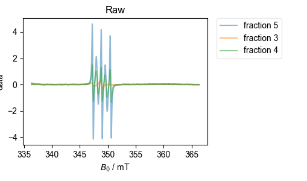
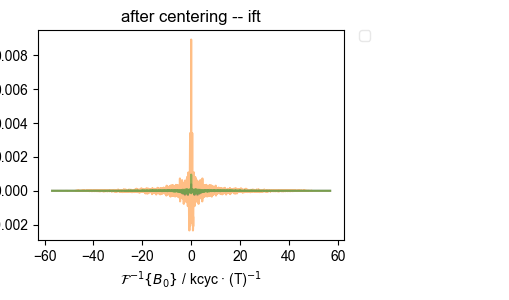

Note
Go to the end to download the full example code
EPR correlation alignment¶
Important note: In order to run this script, you need to set the default calibration values in your pyspecdata config, as detailed by the QESR example.
While we can align by microwave frequency and normalize according to peak-to-peak amplitude, it scan still be hard to identify subtle differences between ESR spectra, and small imperfections – such as free MTSL – can play an outsized role.
Therefore, here, we use correlation to align the spectra and then use “dot-product scaling” to normalize them. By “dot-product scaling” we mean scaling the amplitude of one vector (here a spectrum, \(\mathbf{b}\)) relative to a reference (here \(\mathbf{a}\)) to minimize the residual between the two – i.e. we minimize the expression
by varying the scaling constant \(c\). The solution to this is
In order to do all this, we need a common x-axis that we can use for correlation, etc. Here, we look for the fields that are furthest left and furthest right, and for the smallest spacing between field samples – we use these values to construct a (therefore all-inclusive) x axis.
Also, for the purposes of dot-product scaling, it is better to scale the less noisy spectrum (\(\mathbf{b}\) above) relative to the noisier spectrum (\(\mathbf{a}\) above) – i.e. above, we want \(\mathbf{b}\) to be less noisy. Here, we simply find the largest spectrum in the group (assuming it is least noisy) and use it as \(\mathbf{b}\).
from pyspecProcScripts import align_esr
import matplotlib as mpl
import pyspecdata as psd
import matplotlib.pylab as plt
mpl.rcParams.update({
"figure.facecolor": (1.0, 1.0, 1.0, 0.0), # clear
"axes.facecolor": (1.0, 1.0, 1.0, 0.9), # 90% transparent white
"savefig.facecolor": (1.0, 1.0, 1.0, 0.0), # clear
"figure.figsize":(3 * 1.05 * 1.618, 3),
})
# sphinx_gallery_thumbnail_number = 1
so we can control directories, etc, load the data, but don’t mess with it at all (that’s handled by align_esr)
filename_dict = {
"220307_S175_KCl": "220307_S175_KCl.DSC",
"220729 prS175": "220729_prS175.DSC",
"220307_S175_KI": "220307_S175_KI.DSC",
"220307_S175_KH2PO4": "220307_prS175_KH2PO4.DSC",
}
data_dict_multiexpr = {}
for k, v in filename_dict.items():
data_dict_multiexpr[k] = psd.find_file(v, exp_type="francklab_esr/Farhana")
This one is straightforward, so I just save the output, which I plot below. This compares several samples with slightly different conditions to look for differences. Not, in particular, how things get lined up nicely despite the presence of MTSL contaminant in some.
data_dict_multiexpr = align_esr(data_dict_multiexpr)
The first plot below comes from this data.
However, I then load the data from a desalting run (separating protein from MTSL). Because that data is a bit trickier, and I’m using more of the options for the alignment function, I pass the function the figure list object (fl), and let it generate all the diagnostic plots.
filename_dict = {}
for j in range(3, 6):
filename_dict[f"fraction {j}"] = (
f"240404_L56_MTSL_Rasbatch240320_fraction{j}.DSC"
)
data_dict_desalt = {}
gen_pdf = False
for k, v in filename_dict.items():
data_dict_desalt[k] = psd.find_file(v, exp_type="francklab_esr/warren")
# }}}
with psd.figlist_var(width=0.7) as fl:
fl.next("PR comparison", legend=True)
for k, v in data_dict_multiexpr.items():
fl.plot(v, label=f"{k}\n÷ {v.get_prop('scaling'):#0.3g}")
fl.adjust_spines("bottom")
plt.title("")
plt.ylabel("")
plt.gca().set_yticks([])
align_esr(
data_dict_desalt,
fl=fl,
on_crossing=True,
correlation_slice=(-0.5e-3, 0.5e-3),
)
if gen_pdf:
fl.show_prep()
fl.next("centered spectra")
plt.savefig("overlay.pdf")

- 


- 
{'width': 0.7}
1: PR comparison |||mT
2: Raw |||mT
3: correlation |||mT
4: find center |||mT
5: before centering -- ift |||kcyc · (T)$^{-1}$
6: after centering -- ift |||kcyc · (T)$^{-1}$
7: aligned, autoscaled |||mT
8: centered spectra
Note that the ÷ in the legend above indicates what the (QESR rescaled) spectrum has been divided by in order to get the spectrum shown. Thus, if the spectra line up well, this gives a very accurate measure of relative concentration. This can be useful, since it doesn’t depend on baseline correction, etc, as a full-blown QESR does.
Total running time of the script: (0 minutes 1.570 seconds)